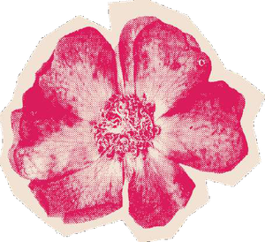
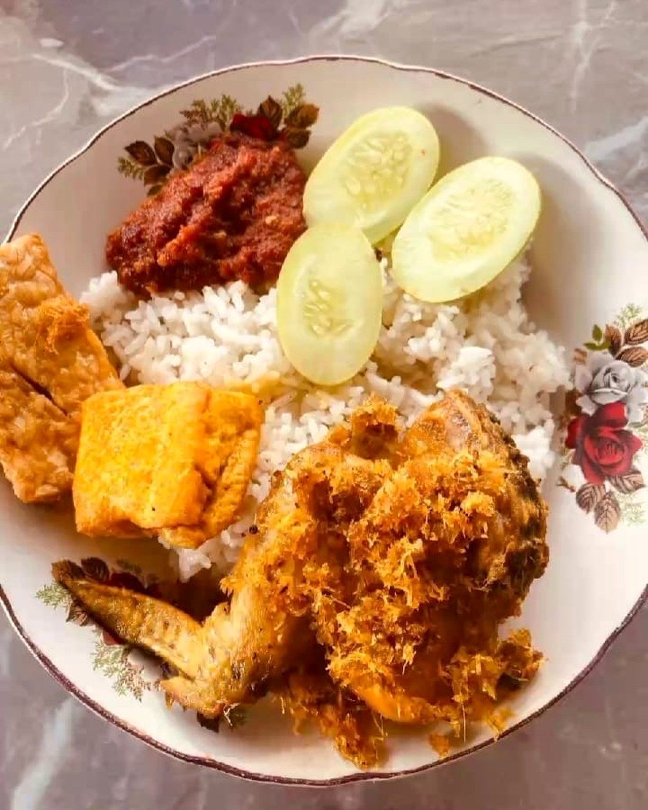
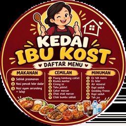
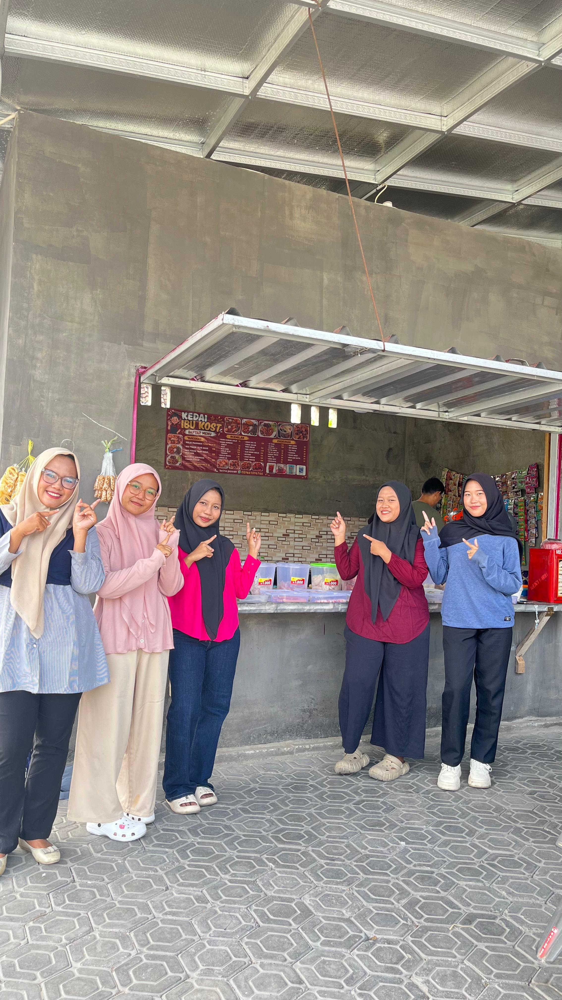
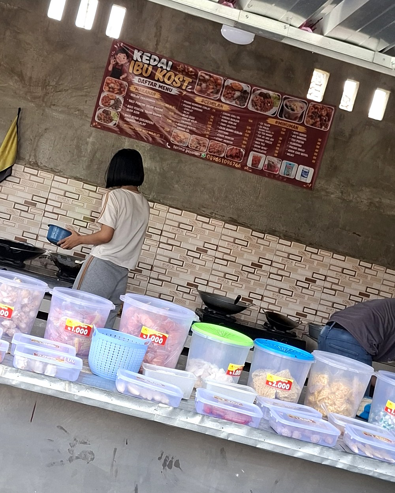
Tahun berdiri
Menu terdaftar
Akses katalog
Semua data di atas dipakai sebagai dasar penyusunan strategi pemasaran digital kelompok: mulai dari menentukan target pasar, memilih platform, sampai menetapkan tujuan website.
Promosi dimulai dari satu platform, lalu berkembang bertahap — dan pada versi ini ditambah website.
Video promosi & cuitan
Foto produk & reels
Halaman & grup warga
Katalog & profil resmi
Satu-satunya media promosi awal.
Jangkauan diperluas ke warga & anak muda.
Katalog resmi yang bisa diakses kapan saja.
Kanal visual untuk menarik perhatian, lalu mengarahkan pembeli ke katalog website.
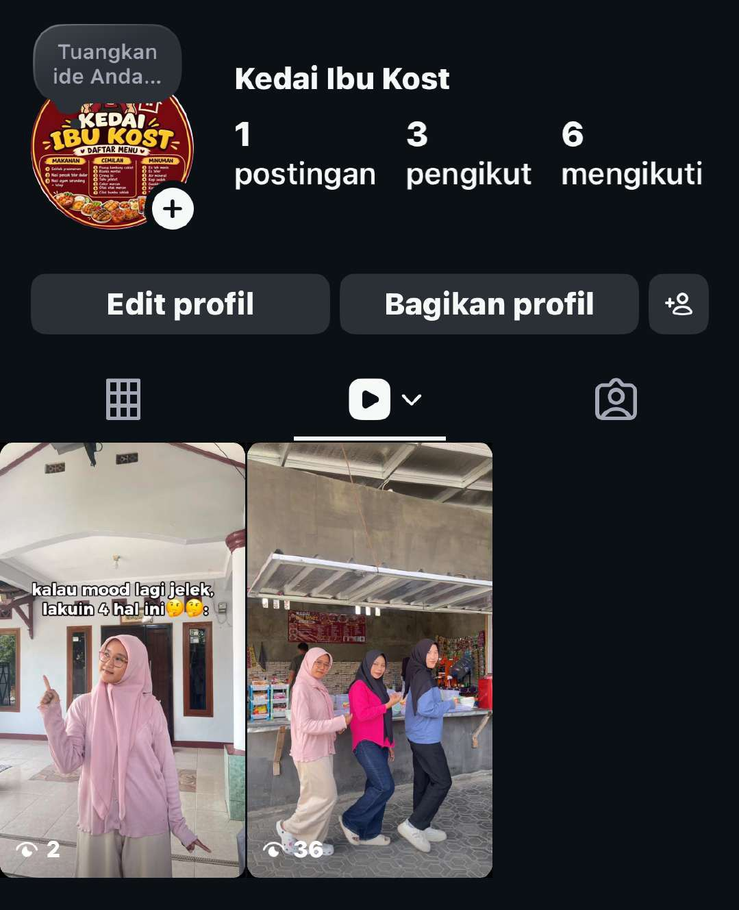
Menarik perhatian lewat konten harian, lalu pembeli diarahkan ke website untuk melihat menu lengkap.
Menjaga hubungan pelanggan lama dan menjangkau warga sekitar.
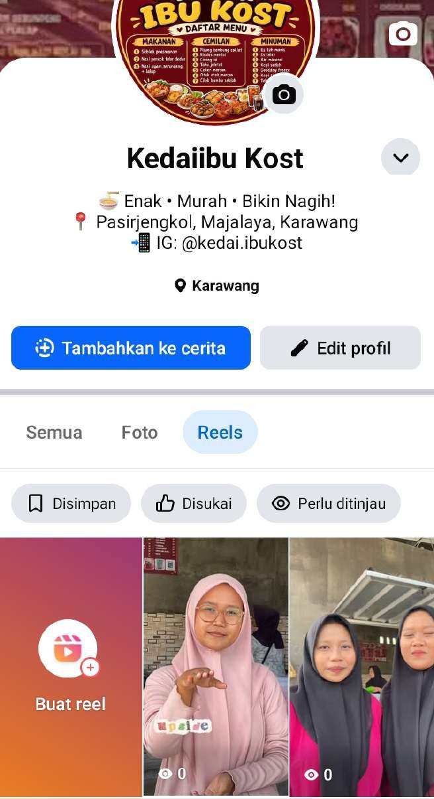
Menjangkau warga dan pekerja lewat grup, lalu tautan website dipasang di halaman usaha.
Satu tautan untuk menu, harga, dan lokasi — bisa dibuka kapan saja.
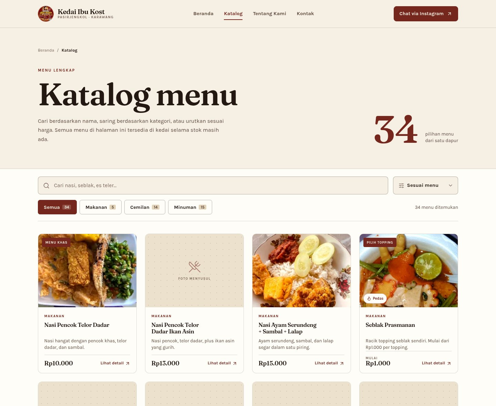
Ketiganya saling melengkapi: media sosial menarik perhatian, website memberi informasi lengkap.
| Aspek | Website BARU | ||
|---|---|---|---|
| Fungsi utama | Menarik perhatian & interaksi | Menjaga hubungan pelanggan | Pusat katalog & informasi |
| Jenis konten | Foto & video harian | Postingan, grup, review | Daftar menu, profil, lokasi |
| Segmen | Remaja – dewasa muda | 30 tahun ke atas & warga | Semua orang, tanpa batas waktu |
| Fitur kunci | Reels, Story, hashtag | Grup, Marketplace | Pencarian, filter, halaman produk |
| Aksi calon pembeli | DM / link di bio | Chat & gabung grup | Pesan via WhatsApp/IG + buka Maps |
| Biaya | Gratis | Gratis | Gratis (hosting Vercel) |
Website menjadi tahap kedua di antara media sosial dan konfirmasi pesanan.
TikTok, Instagram, dan Facebook menampilkan foto produk & promo menarik.
Pelanggan membuka website untuk melihat menu, harga, foto, dan lokasi kedai.
Klik tombol pesan → chat WhatsApp / Instagram dengan pesan otomatis berisi nama menu.
Pesanan dikonfirmasi, pelanggan datang ke Pasirjengkol atau konfirmasi ambil nanti.
Website melengkapi media sosial: informasi lebih lengkap, jangkauan lebih luas.
Platform sosial aktif
Website (upgrade)
Menu terkatalog
Proses pembuatan konten, pengelolaan akun, sampai pengerjaan website bersama pemilik usaha.
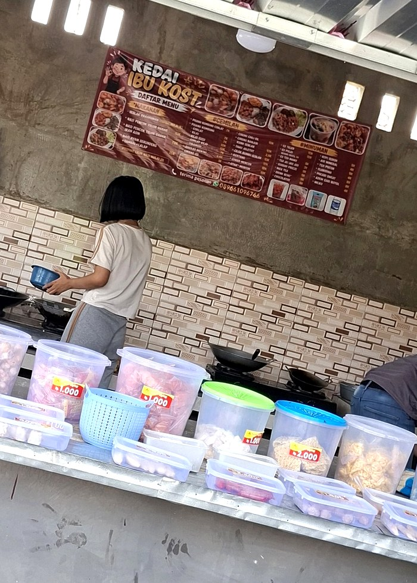
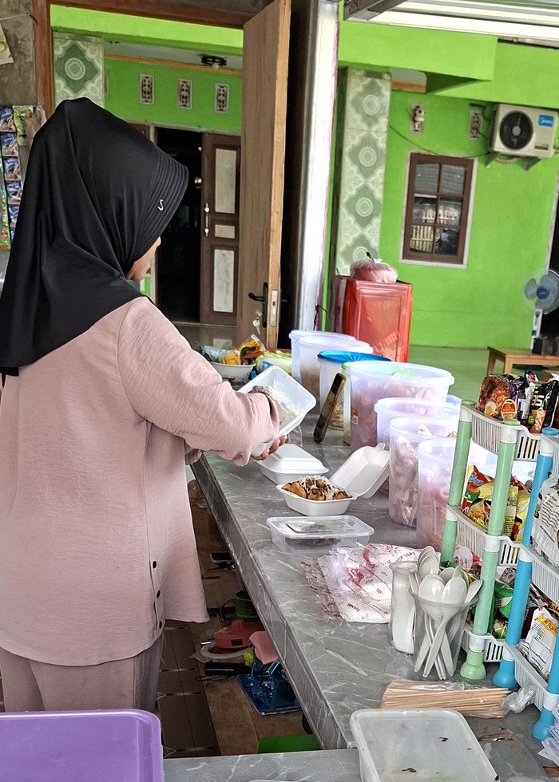
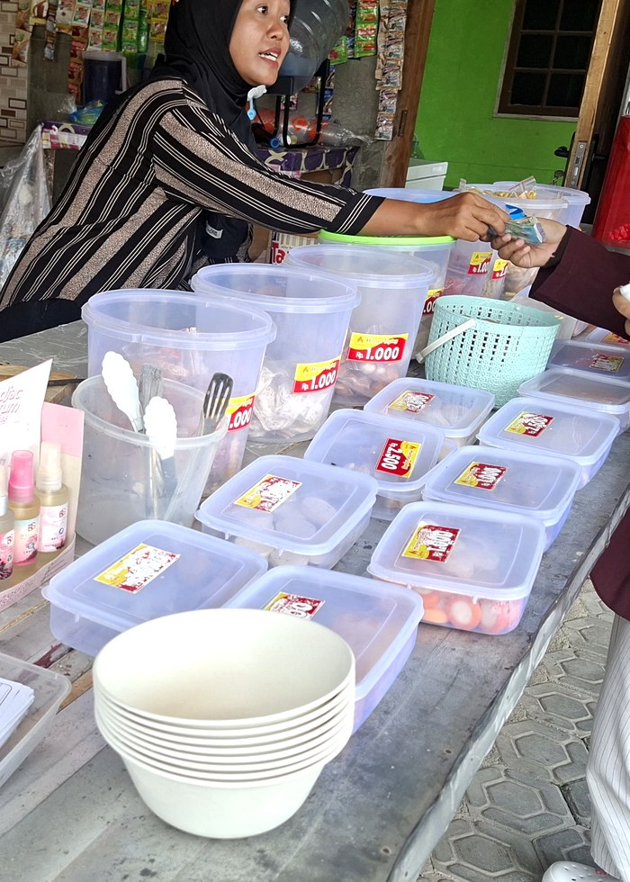
Terima kasih atas perhatian dan pembahasan dari dosen serta teman-teman.